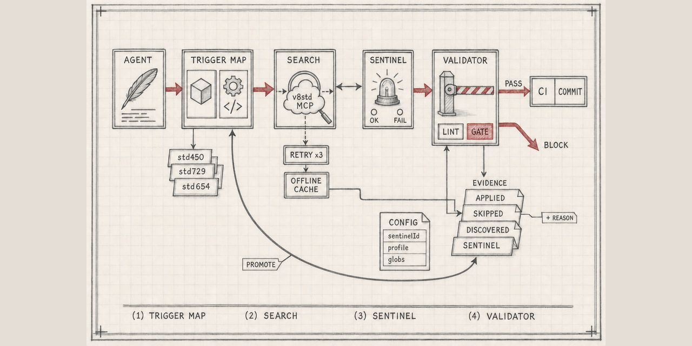

Обвязка для работы со стандартами разработки 1С
Не даёт ИИ-агенту молча пропустить сверку со стандартами при работе с BSL и метаданными. Работает по правилу «запрет по умолчанию»: не подтверждено — не пропускаем.

Проблема
Вы написали агенту в инструкции: «сверяйся со стандартами разработки». Агент отвечает «сверился». Иногда действительно сверяется. Отличить одно от другого невозможно — невыполнение инструкции выглядит ровно так же, как выполнение.
Четыре слоя
| Слой | Что ловит | Что протекает без него |
|---|---|---|
| Карта ситуаций | Известные случаи: «пишешь запрос → std729/437/438» | Агент сверяется по памяти и по настроению |
| Обязательный поиск | Стандарты вне карты | Карта замерзает в моменте создания |
| Сторожевая проверка | Устаревший или недоступный указатель | «Ничего не нашлось» неотличимо от «сервис лежит» |
| Проверка отметок | Саму молчаливую деградацию | Первые три слоя остаются рекомендацией |
Главная идея
Пропуск разрешён, молчаливый пропуск — нет. Каждая проверка оставляет одну
машинно-читаемую строку, и skipped с причиной из закрытого списка — полноправный,
ожидаемый исход. Невозможен только третий вариант: не проверить и не сказать об этом.